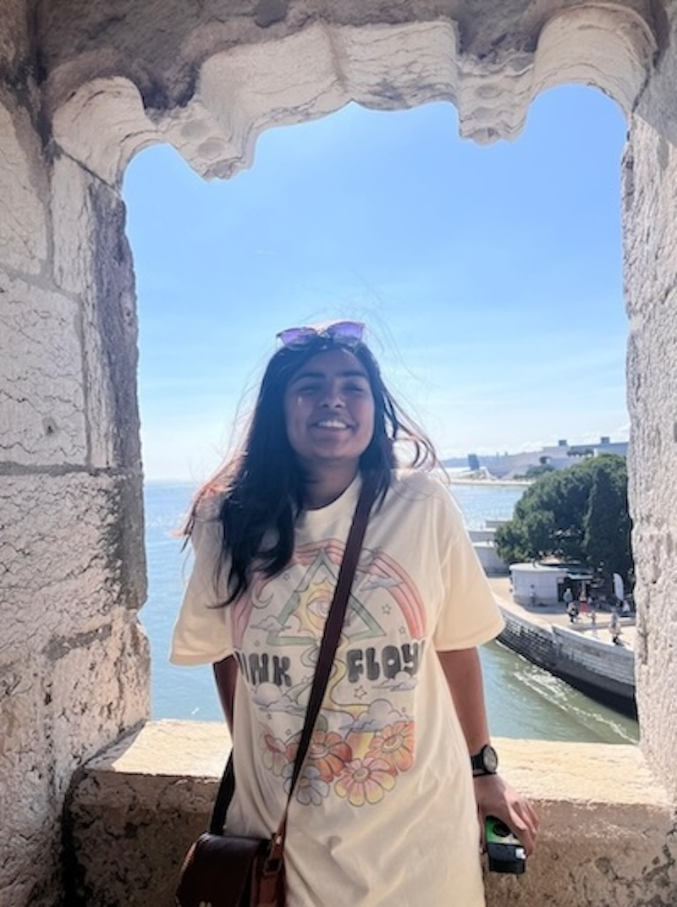

Hi! I'm Mira...
I am currently a Junior at the University of Massachusetts pursuing a double major in English and Political Science. Specifically with a specialisation in Writing, Rhetoric, and Literacy Studies, as well as a certificate in Professional Writing and Technical Communications I enjoy learning more about the world around me, the way people interact with each other, and how writing interacts with different audiences. I love playing around with different styles of writing and adapting them to suit different audiences. As an English and Political Science double major, I have honed my research skills and developed my ability to write with clarity across a range of subjects—from debating polarization in the United States to analyzing old English texts. During my free time, I tend to find joy in my books. In fact, my biggest concern during move-out each year is where to place my collection! I also enjoy designing fun pages on Canva and experimenting with color across a range of mediums.
